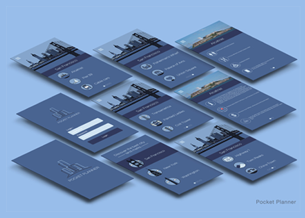

The Brief
As part of our module, we were asked to create a travel app using illustration. It had to have three screens - Home, Pick a City and a detail of the city.
The Process and Idea
I gathered ideas from my own travels and from the internet. From the outset, I decided to centre my app on San Francisco and its landmarks; a city that I am familiar with. This involved designing an icon set of the various landmarks and an illustration of the city. This was initially sketched on paper before creating them on Illustrator.
The Result
The travel app contains several screens, all in a monochromatic style and in a clean design. It provides relevant information regarding San Francisco's landmarks and points of interest.
